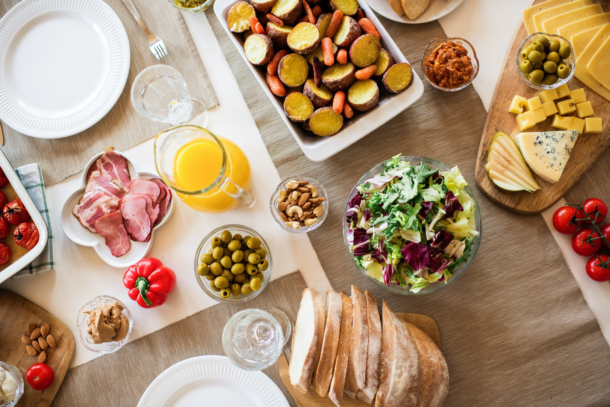

Bienvenidos
Fue en Julio de 1994 que Apolo - Sabores tradicionales abrió sus puertas al público en su antiguo local de la calle 3 de febrero. Hemos preparado una selección de los platos que fueron parte de la historia de nuestro restaurante a lo largo de los últimos 26 años. Platos sabrosos que seguro despertarán la nostalgia en aquellos que nos acompañaron durante nuestra vida, dedicada a intentar hacerlos felices cada vez que nos visitaron.
